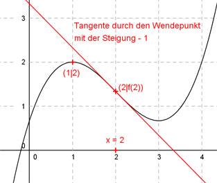

Aufgabe 79 Der Graph einer ganzrationalen Funktion 3. Grades hat einen Extremwert bei (1|2) und an der Stelle x = 2 einen Wendepunkt mit der Steigung -1. Wie lautet seine Funktionsgleichung?  Allgemeine Form einer ganzrationalen Funktion 3. Grades: f(x) = ax3 + bx2 + cx + d f’(x) = 3ax2 + 2bx + c f’’(x) = 6ax + 2b 4 Bedingungen: 1. Hat einen Extremwert bei (1|2) bedeutet zum einen: f(1) = 2 --> a * 13 + b * 12 + c * 1 + d = 2 --> a + b + c + d = 2 I 2. Hat einen Extremwert bei (1|2) bedeutet zum anderen: f’(1) = 0 --> 3a * 12 + 2b * 1 + c = 0 --> 3a + 2b + c = 0 II 3. Hat an der Stelle x = 2 einen Wendepunkt mit einer Steigung von -1 bedeutet zum einen: f’’(2) = 0 --> 6a * 2 + 2b = 0 --> 12a + 2b = 0 III 4. Hat an der Stelle x = 2 einen Wendepunkt mit einer Steigung von -1 bedeutet zum anderen: f’(2) = - 1 --> 3a * 22 + 2b * 2 + c = - 1 --> 12a + 4b + c = -1 IV II * (-1) + IV -3a - 2b - c = 0 12a + 4b + c = -1 -------------------- 9a + 2b = -1 V III + V * (-1) 12a + 2b = 0 -9a - 2b = 1 ------------- 3a = 1 |:3 a = 1/3 a = 1/3 in V eingesetzt: 9 * 1/3 + 2b = -1 3 + 2b = -1 |-3 2b = -4 |:2 b = -2 a = 1/3 und b = -2 in II eingesetzt: 3 * 1/3 + 2 * (-2) + c = 0 1 - 4 + c = 0 -3 + c = 0 |+3 c = 3 a = 1/3 und b = -2 und c = 3 in I eingesetzt: 1/3 - 2 + 3 + d = 2 4/3 + d = 6/3 |-4/3 d = 2/3 Gesuchte Funktionsgleichung: f(x) = (1/3)3 - 2x2 + 3x + 2/3